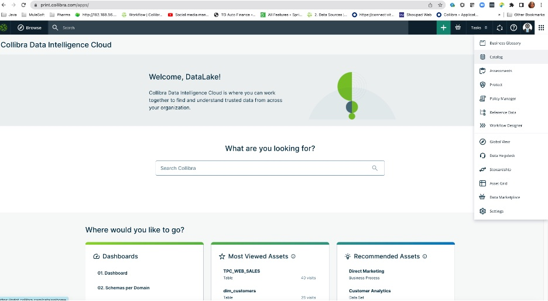
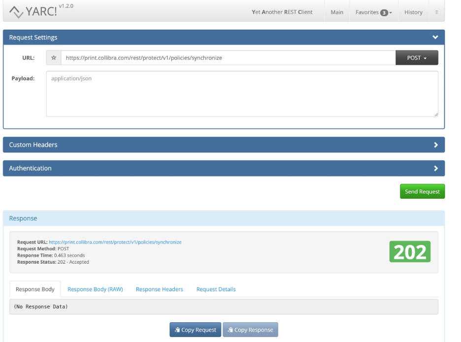
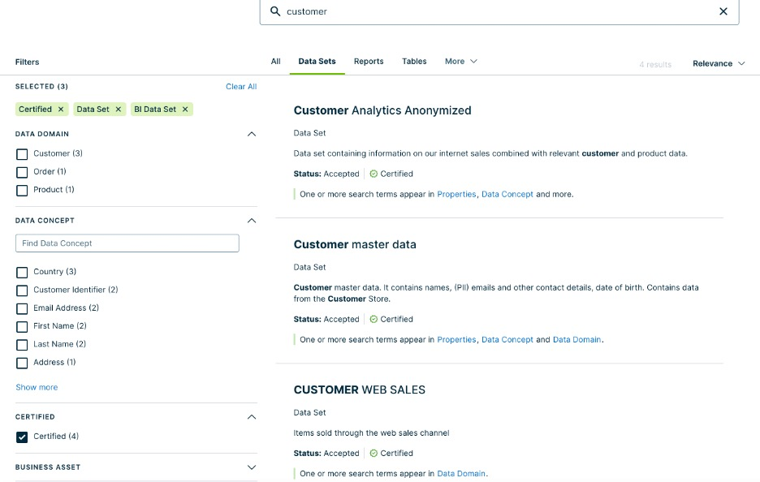
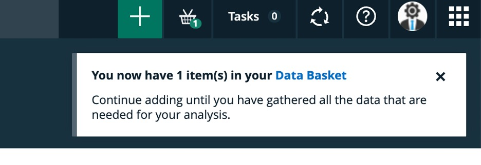
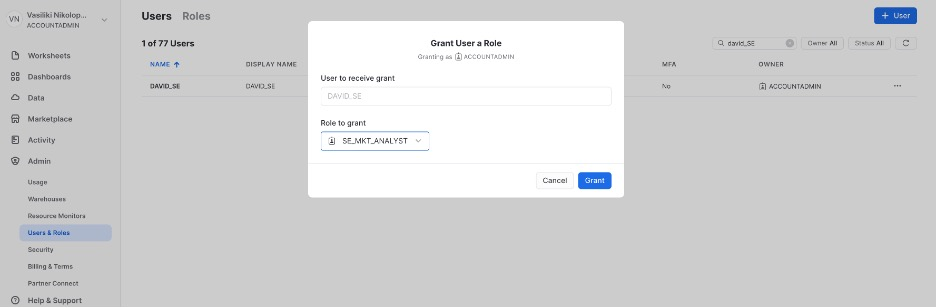
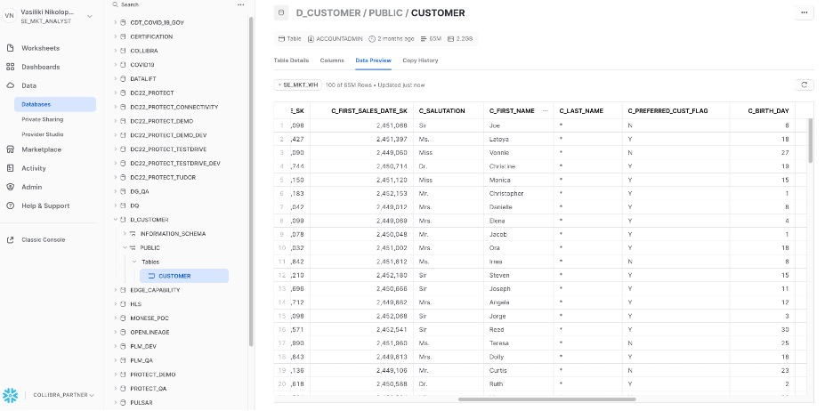
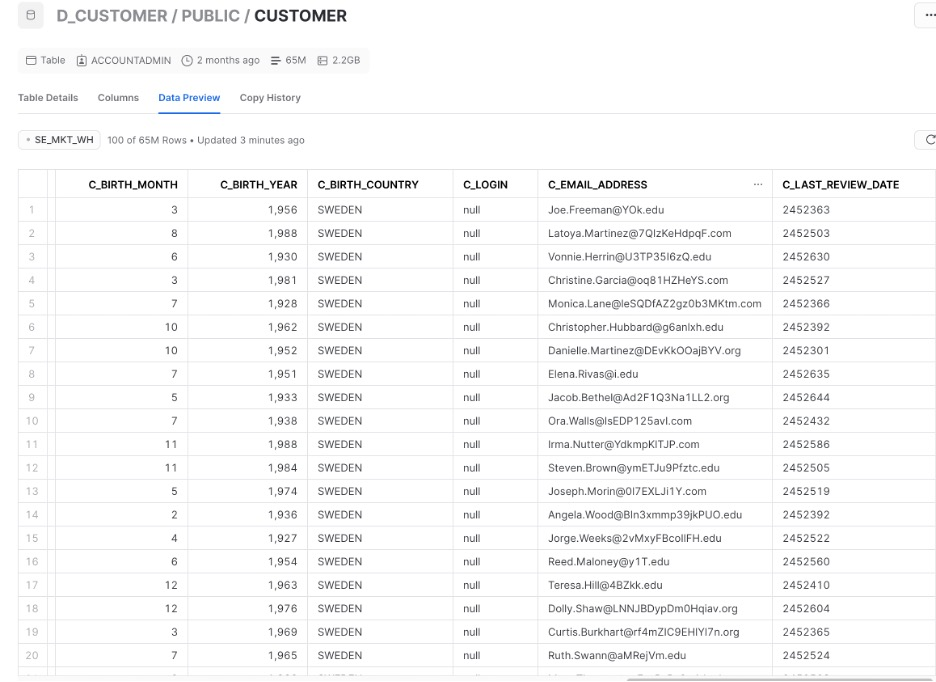

This is a guide on how to catalog Snowflake data into Collibra, link the data to business and logical context, create and enforce policies. Also we will show how a user can search and find data in Collibra, request access and go directly to the data in Snowflake with access policies automatically enforced.
Collibra can enable controlled and secure data access across Snowflake databases from your analytic, machine learning and ETL services. Collibra and Snowflake enforces data access policies at run-time, so each user will only see the data they are authorized to view. Collibra integrates to Snowflake using a JDBC driver or API, providing the ability to automatically ingest technical metadata and lineage, as well as perform profiling and classification.
Collibra overall functionality in integration with Snowflake can be summarized with the following diagram:

Collibra is a Data Intelligence platform that allows users to search, and find or create trusted data Enterprise wide. Collibra allows users to automatically catalog technical metadata and link it to the business and logical and data privacy context required. It also allows for Data Quality discovery and metrics. Collibra has automation in the collaboration of users, the certification of data assets and in general of data intelligence processes.

Prerequisites
- Access to Snowflake database
- Access to a Collibra instance. Please reach out to your Collibra sales representative or at: https://www.collibra.com/us/en/contact-us
What You'll Learn
- how to catalog Snowflake data in Collibra
- how to connect the metadata into a data domain and business and logical data attributes
- how to enforce data privacy policies on the Snowflake data
- how to search for data in Collibra
- how to request access of Snowflake data in Collibra and view data with policies enforced
What You'll Need
- A Snowflake instance
- A Collibra instance
What You'll Build
- Metadata of Snowflake, A Policy for this data, diagram that connects the data to its business context.
- authors:
- Vasiliki Nikolopoulou, Principal, Integrations Architect, Collibra
- Tomer Steinberg, Sales Engineer Majors Benelux
In this step we will import into Collibra the techincal metadata from a Snowflake database. We will use Collibra Edge, which is an Integration Hub residing within the customer firewall for safety. This integration hub retrieves the Snowflake metadata using native JDBC drivers.
Go to Collibra and click on Catalog to start the ingestion:

Click on the plus sign (green square box with white plus sign,top right on the screen) to choose the database:

Choose register through Edge and choose the Snowflake option (first option)

Go to the Snowflake Community and look for the D_CUSTOMER database:

Collibra, in addition to technical metadata it can also import technical lineage directly from Snowflake into Collibra using either SQL or API calls.
Technical lineage in Collibra looks for Snowflake data includes the SQL transformations. Here is an example of technical lineage of Snowflake data in Collibra:

Users can see the actual SQL transformations if needed:

Collibra also allows users to see profiling information and sampling (anonymized) if needed. Here is an example of profiling information:

In this stage, we will specifically define the Data Privacy policies and rules that will be automatically enforced in Snowflake directly from within Collibra.
Please click on the Collibra Protect option after clicking the nine dots all the way to the top right of the Collibra User Interface:

This will take you to the Collibra Protect environment, then click on the Data Access Rules. And then click on Create a Data Access Rule button:

A form opens where you can create the new rule.
Type the name of the rule, its description. This is a rule about Marketing people. All people within Marketing will have access to this customer dataset, however we will enforce the hiding or masking of the Last Name column and we will only allow users to see customers from the country Belgium. We will choose the user group BE_MKT_ANALYST, in which will belong all marketing analysts in Belgium. You can fill in as follows:

At this point you can click on "Generate Preview" to see which columns will be viewed and which will be filtered and masked:

Click on Save Rule for the rule to be save. At this point the creation of this rule is sent to Collibra and the synchronization via API to the Snowflake environment is in Pending state. The synchronization happens automatically every 60 minutes.

If you need to expedite the synchronization of the new rules, you can trigger them via a POST command as follows from an API posting software:

This synchronization is triggered and within less than a minute we see that the rule is no longer in pending state but it is in effect:

We can simply check this if we login to Snowflake and go to D_CUSTOMER database, choose the PUBLIC schema and open the CUSTOMER table. Go to Preview and choose the BE_MKT_WH and also choose the role BE_MKT_ANALYST. Then you should be able to see the columns except for Last Name which is masked while all the rows are filtered for country Belgium.
In this chapter we will look into how a user can search and find trusted data to use and request access to the data while at the same time policies will be automatically enforced.
David, the marketing analyst from Sweden is looking for customer data that is trusted and contain email and first name and birthdate at the minimum.
In Collibra Data Marketplace the user is searching for customer data:

Filters the search by pressing the Data Sets tab and the Certified option in the filters to the left.

The second dataset is the one that seems proper since in the description it states that it contains names, birthdates and emails.

Clicking on the columns we confirm this is the right set:

Clicking on the Go to Asset Details we can discover more about this dataset. It belongs to the Customer Domain, we see the name of the Data Owner, the rating:

If the user clicks on the "Diagram" to the left it is possible to see the full lineage of the dataset, that includes the logical, the business, the data quality and data privacy context.
What we can see in this diagram, is the connection of the dataset to the columns and tables and systems it draws its data from. Then the connection of these technical metadata to the logical definitions and consequently to the business context. Also linked to the logical definitions we can see the data privacy rules.

Also you can click at the Data Protection tab all the way to the bottom left, and this will show the policies and restrictions associated with this dataset.

As you can see Collibra allows you to see the lineage of a dataset in relation to its technical contents and in extension to its business and data privacy context. For example we can see that the columns that represent Last Name and Country each has a policy.
The user can add the dataset into the Data Basket by pressing the "Add to Data Basket" button:


This brings the dataset to the user's personal Data Basket:

By clicking at the Data Basket icon we go to the area where we can start requesting the dataset(s).
The user can then choose the dataset and click on the "Checkout Data Basket" in order to start requesting access to the dataset.

By clicking Submit at the end of this form, a workflow starts which sends a notification to the dataset Data Owner, requesting access to the dataset:

The Data Owner will see the request and will evaluate if this user can get access to the dataset.
The Data Owner will then go to the dataset asset to check about policies and groups associated with this dataset. This will take us to the Collibra Protect rule that the Data Owner can check in detail:

In this case we see that this rule is about granting access to the dataset Customer master data to all people who work in the Marketing department, while there is default masking policy for the Last Name and the only customer rows shown are filtered by country, in this case Sweden.
Therefore the Data Owner understands that the user should be granted the SE_MKT_ANALYST role in Snowflake in order to get access to this dataset.
The Data Owner sends an approval notice to the requester, asking the requester to first accept the terms and conditions of accessing this dataset:

The requester will then receive the task to accept the terms and conditions in order for access to be granted. The user checks the "All of the above" radio button and clicks on the Accept Notice button to proceed.
At this point the Data Owner receives notification that the requester accepted the conditions and goes to Snowflake to grant to the requester the role "SE_MKT_ANALYST".
Go to Snowflake in the area Users and Roles and Search for the user to which we are going to grant access. Then click on the three dots to the right of the user and choose the Grant Role option in order to grant the Role to the User.

At this point look for the Role in Collibra which gives access with enforced policies to a user, in this case the SE_MKT_ANALYST.

Now the user David will be able to login to Snowflake and access the table D_CUSTOMER with his role SE_MKT_ANALYST, and see the data with the enforced policies. First look for "Data", then choose D_CUSTOMER, then choose the schema "Public" then choose the warehouse SE_MKT_WH, then Preview Data. As you can see the Last name is hidden:

And also the country is filtered to include customers from Sweden only:

In this lab we learned how to catalog Snowflake data, how to link this data to its business context, how to enforce privacy policies on it and how to search and access it.
Collibra provides value for Snowflake users because it provides a unified environment to:
- see all technical metadata with its lineage
- with a full business context
- in a friendly user interface with:
- powerful search, with filters
- collaboration features (ratings, comments, messages),
- automation (workflows, tasks, issue management)
- automatic policy creation and enforcement
- data quality assessment and metrics
The value that Collibra brings to Snowflake implementations in brief:

Collibra is an ideal environment for all Snowflake users, business or technical, to view, search, understand, trust and collaborate with data.
You can learn more about Collibra at Collibra website.
You can learn more about the Snowflake partnership with Collibra at Collibra-Snowflake Partnership